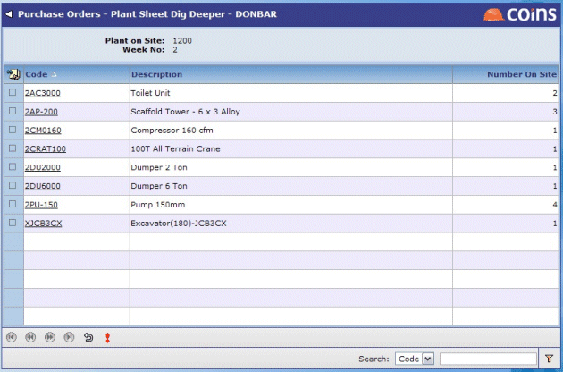
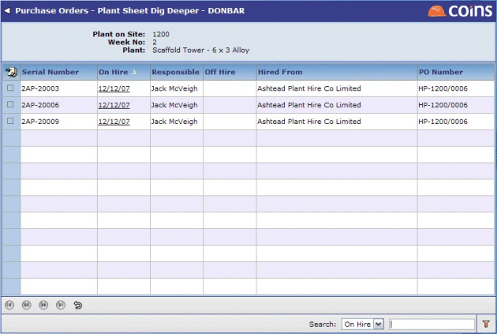
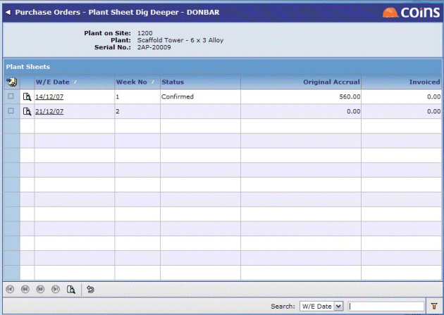

- Go to Sheet Dig Deeper.
- In the selection frame:
| Enter the number of the on which you want to . |
| Week | Enter the number of the week on which you want to report, or select it from the look up or |
| Week Ending | Use the lookup to select the week ending date of the week on which you want to . |
You can filter the list to restrict which items are shown (for example, to show at a single section or location, under the responsibility of a single person, or from a single ): use the Filter Options tab to enter the details.
- Top level - summary by commodity
displays a summary list showing how many of each type of item are (or were) on site during the selected week. There is one line for each commodity code.

- Next level - individual items
The next level shows one line for each item with the same code, giving the and dates, the serial number, order number and person responsible, and who the was from.

- Next level - calendar
The next level shows the calendar for that item, with a line for each week the item has been/was on site. The Original Accrual column represents the amount you expected to be billed; the Invoiced column shows the amount you have been invoiced for that week.

To show the sheet for a given week, click the link in the W/E Date column.